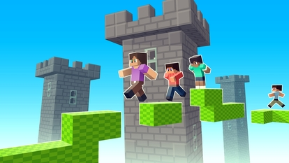
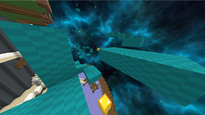
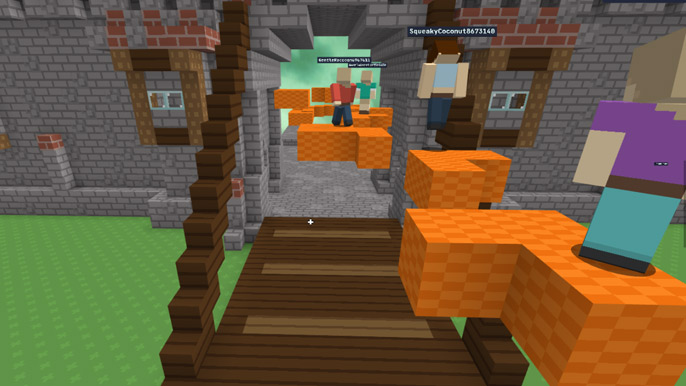

Introduction
BloxdHop.io is a captivating, Minecraft-inspired multiplayer parkour game that challenges players to navigate treacherous blocky obstacle courses. What makes it truly unique is its fast-paced, competitive environment where precision and timing are everything. Players race against the clock and each other to reach the end of the map without falling into the endless void below. The vibrant, voxel-style graphics combined with the high-stakes, one-hit-fail mechanics create an addictive loop of quick restarts and triumphant successes. Players love the game for its accessible yet deeply rewarding gameplay, the thrill of mastering complex jump sequences, and the satisfaction of earning gold to unlock crucial upgrades like speed boosts and double jumps. It is a perfect test of reflexes and spatial awareness for parkour enthusiasts.
Getting Started

Starting your journey in BloxdHop.io is straightforward but requires immediate focus. On PC, use WASD or arrow keys to move and the Spacebar to jump. Mobile players can simply tap the screen to jump and swipe to move. Your primary objective is to traverse from block to block, aiming to reach the final checkpoint before time runs out or you fall into the void. When you begin, take a moment to understand the game's physics. Jumps have a specific arc, and holding the jump button doesn't necessarily make you go higher, but rather emphasizes timing. Look for the distinct colored blocks that act as checkpoints; touching them saves your progress so you won't restart from the very beginning if you mess up. Initially, focus on survival rather than speed. Familiarize yourself with the gap distances between standard blocks. As you complete your first few runs, you will earn gold. Spend this gold in the upgrade menu to purchase your first speed or double-jump enhancements, which will drastically change how you approach the early obstacles.
Basic Tips
1. Master the Spacebar Timing: Don't just spam the jump button. Wait until you are at the very edge of a block before jumping to maximize your distance. For example, when facing a two-block gap, jump exactly as your character's toes touch the edge. 2. Utilize Checkpoints Religiously: Always aim for the glowing checkpoint blocks first. If you miss a checkpoint and fall, you lose all progress since the last one. Treat them as mandatory stepping stones. 3. Invest in Upgrades Early: Don't hoard your gold. Buy the double jump upgrade as soon as possible. It gives you a crucial mid-air correction, allowing you to save jumps that would otherwise result in a void fall. 4. Look Ahead, Not Down: Keep your camera and eyes focused on the next three blocks. Looking down at the void causes panic jumps. For instance, if you see a narrow pillar ahead, start aligning your movement keys before you even leave the current platform.
Advanced Strategies

1. Cornering and Edge Boosting: Advanced players don't just jump straight. By utilizing the WASD keys to hit the exact corner of a block, you can slightly alter your jump trajectory and reach awkwardly placed blocks that a standard straight jump would miss. Practice hitting the outer edges of platforms to extend your range. 2. Momentum Conservation: When landing on a block, immediately start moving in your next desired direction. BloxdHop.io has slight deceleration upon landing. If you land and pause for a millisecond, you lose precious momentum. Chain your movements so that your landing frame transitions instantly into your next jump frame. 3. Void Recovery Drills: Intentionally practice failing. Jump into the void to see how far you can push your limits on specific tricky jumps. By understanding exactly where the kill zone begins on narrow platforms, you build muscle memory for the absolute maximum safe distance, turning seemingly impossible leaps into routine maneuvers.
Pro Tips

1. Pre-Air Strafe: Before you even jump, start holding the strafe key (A or D) in the direction of your target. This subtly shifts your character's position on the block, giving you a fraction of an inch more distance upon takeoff. 2. Audio Cues for Landings: Pay attention to the block landing sound effects. A sharp thud means a perfect center landing, while a softer or delayed sound means you clipped the edge. Use this audio feedback to adjust your next jump's power instantly. 3. Upgrade Synergy: Max out your speed upgrade before double jump. Higher base speed makes the double jump cover significantly more horizontal distance, turning it from a safety net into an aggressive traversal tool.
Conclusion
BloxdHop.io offers a thrilling, high-stakes parkour experience that perfectly balances simple controls with deep, skill-based mastery. Every fall is a lesson, and every successful run is a triumph of precision. Whether you are a casual player looking to beat the clock or a hardcore speedrunner chasing the perfect route, the blocky void awaits. Jump in, upgrade your skills, and prove you have the ultimate parkour reflexes!